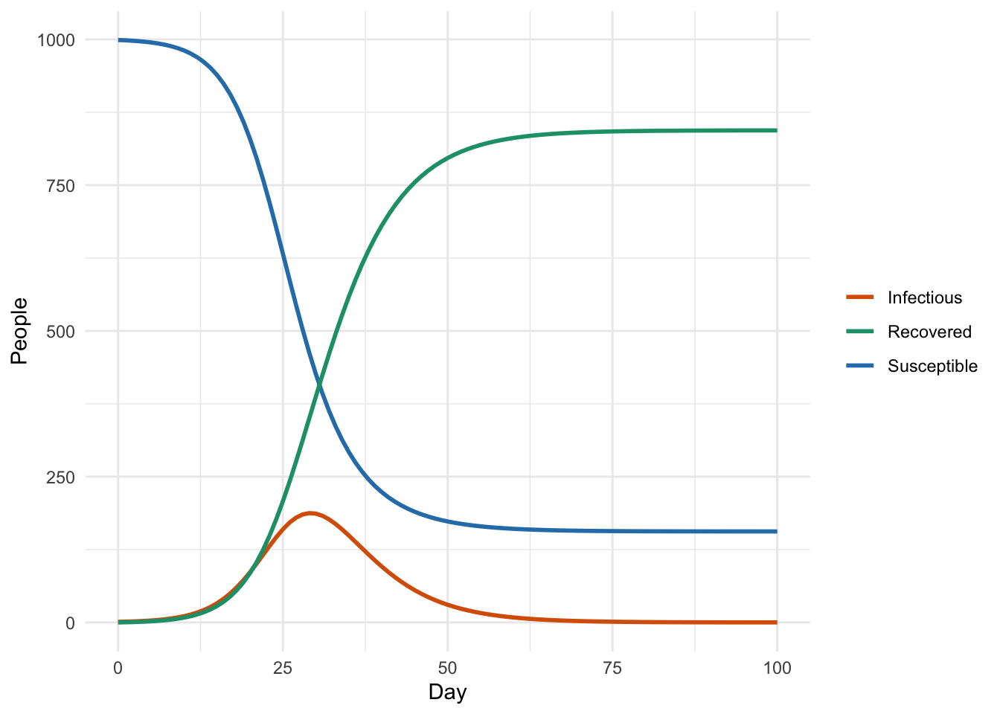
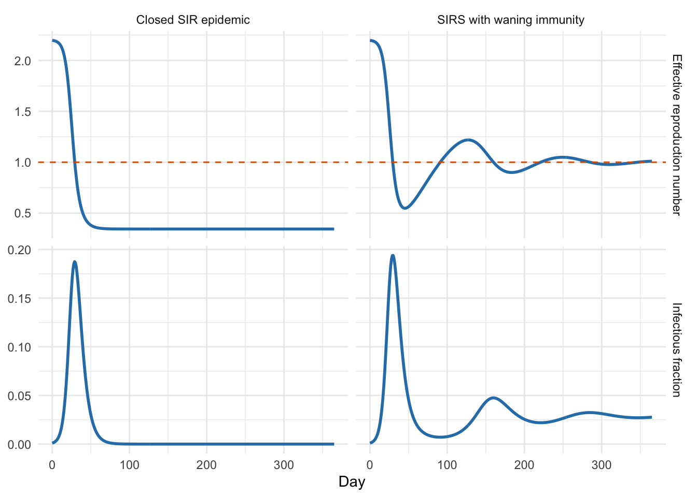
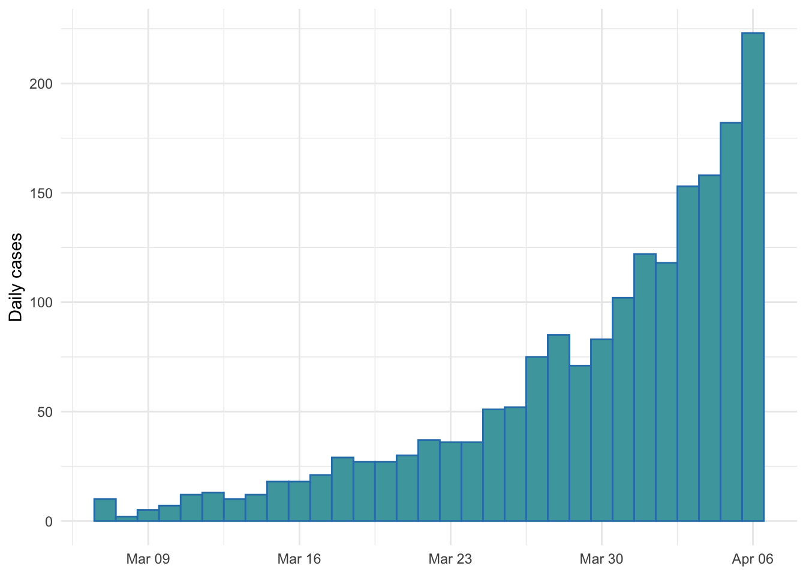
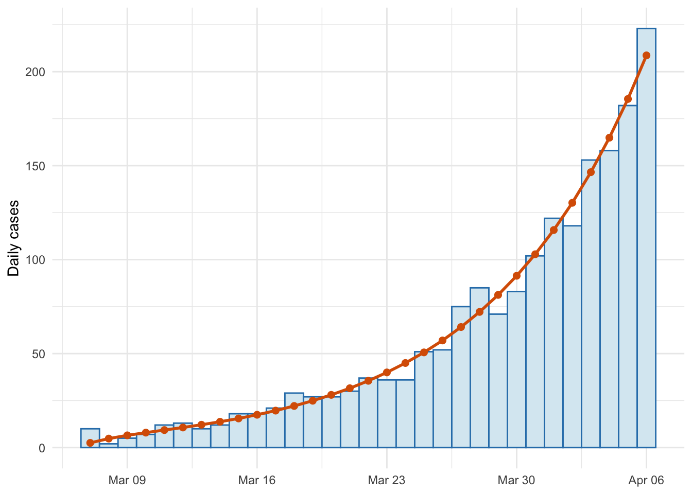
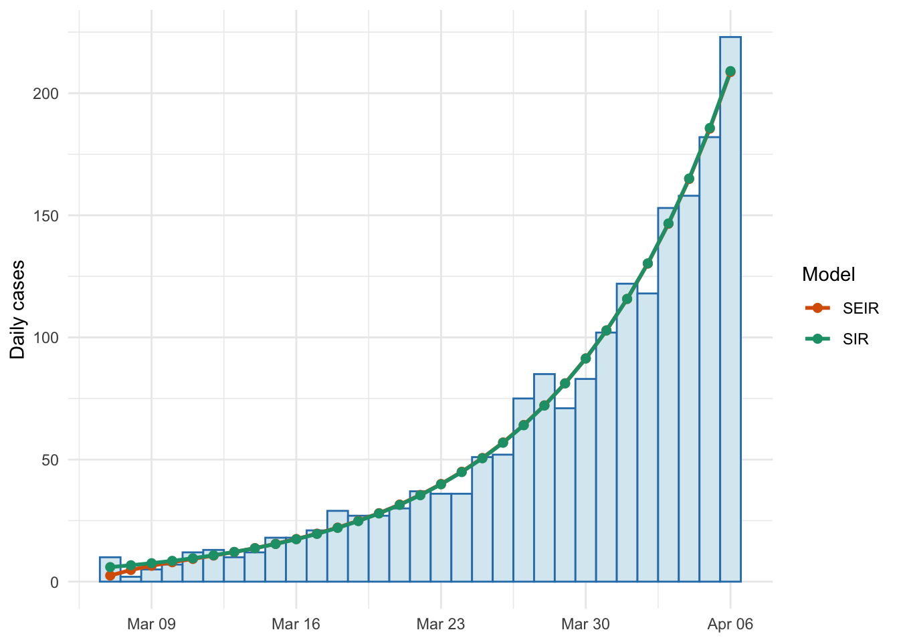

Recap of infectious disease modelling concepts
Short training course
Presenter: SPARKLE Training Team
Session overview and timing (3 hours total)
This session is designed as the first session of the advanced course. It revisits the introductory infectious disease modelling ideas quickly, but with enough practice that students are ready to build, adapt, and fit models in later sessions.
Part 1: Compartmental model structure (~70 min)
- Recap compartments, flows, parameters, and model assumptions: ~15 min.
- Classic model family: SI, SIS, SIR, SIRS, SEIR, SEIRS: ~15 min.
- Diagram-to-equation and equation-to-diagram practice: ~20 min.
- Vector-borne extension and term interpretation: ~15 min.
- Short debrief and transition: ~5 min.
Part 2: Reproduction numbers (~45 min)
- Meaning of basic and effective reproduction numbers: ~15 min.
- Heuristic derivation from infection rate and infectious duration: ~15 min.
- Plot interpretation activity: ~15 min.
Part 3: Likelihood and fitting recap (~55 min)
- What a likelihood is and how it differs from SSQ: ~15 min.
- Poisson likelihood demonstration: ~15 min.
- Mini-practical: remove the exposed period, refit, and compare: ~20 min.
- Wrap-up and buffer: ~5 min.
General notes
- The R practicals assume
deSolveandggplot2are installed. - The likelihood section mirrors the structure of the introductory SPARK session “Fitting Models in R”, but uses simulated data so this session is self-contained.
- Leave the worked SIR refit visible if the group needs scaffolding. Hide it or ask students to try first if the group is moving quickly.
Summary
This session refreshes the core ideas from introductory infectious disease modelling, then uses those ideas to practise model translation, reproduction-number reasoning, and writing a simple likelihood.
This session is divided into three parts:
Part 1 covers:
- Compartmental models as stocks and flows
- The classic model family and its variations
- Turning diagrams into equations and equations into diagrams
- Extending the framework to vector-borne diseases
Part 2 covers:
- The basic reproduction number, \(\mathcal{R}_0\)
- The effective reproduction number, \(\mathcal{R}_e(t)\)
- Heuristic derivation for simple models
- Interpreting epidemic and endemic trajectories from plots
Part 3 covers:
- What a likelihood is
- Likelihood versus sum of squared residuals
- Writing a Poisson likelihood for case count data
- Refitting a simpler SIR model and comparing it to a SEIR model
We recommend saving your text at the end of each part by printing the file.
Part 1: Model Structure
Why start here?
Open by normalising that this is a recap, not a remedial section. The aim is to make students fluent enough to move between biology, diagrams, equations, and code. The session should feel active: keep asking, “What is the flow? What is the rate? What is the assumption?”
Most infectious disease models used in this course are compartmental models. A compartment is a state someone can be in, such as susceptible, infectious, or recovered. A model equation describes the rate at which individuals move between these states.
The modelling workflow is usually:
- Decide which states matter for the pathogen and question.
- Decide which transitions are biologically possible.
- Write a rate for each transition.
- Turn those rates into equations.
- Solve the equations and compare them with data or use them for inference.
That means every term in an equation should have a verbal interpretation. If it does not, the model is usually not yet clear enough.
The SIR model
The classic SIR model divides a population into:
- \(S(t)\): susceptible individuals
- \(I(t)\): infectious individuals
- \(R(t)\): recovered or removed individuals
flowchart LR S[S] -->|beta S I / N| I[I] I -->|gamma I| R[R]
The corresponding equations are:
\[ \frac{dS}{dt} = -\frac{\beta S I}{N} \]
\[ \frac{dI}{dt} = \frac{\beta S I}{N} - \gamma I \]
\[ \frac{dR}{dt} = \gamma I \]
where \(N = S + I + R\), \(\beta\) is the transmission rate, and \(\gamma\) is the recovery rate.
In pairs, explain each term in the SIR equations in words. Try to avoid saying “because the equation says so”. Start with the biological event: infection or recovery.
Running a first model
The code below solves a SIR model. The key object is the function sir_model(): it returns the instantaneous changes in \(S\), \(I\), and \(R\) at each time point.
sir_model <- function(t, state, parameters) {
with(as.list(c(state, parameters)), {
N <- S + I + R
beta <- R0 * gamma
new_infections <- beta * S * I / N
recoveries <- gamma * I
list(c(
dS = -new_infections,
dI = new_infections - recoveries,
dR = recoveries
))
})
}
sir_parameters <- c(R0 = 2.2, gamma = 1 / 5)
sir_state <- c(S = 999, I = 1, R = 0)
sir_times <- seq(0, 100, by = 1)
sir_solution <- as.data.frame(ode(
y = sir_state,
times = sir_times,
func = sir_model,
parms = sir_parameters
))
ggplot(sir_solution, aes(x = time)) +
geom_line(aes(y = S, colour = "Susceptible"), linewidth = 1) +
geom_line(aes(y = I, colour = "Infectious"), linewidth = 1) +
geom_line(aes(y = R, colour = "Recovered"), linewidth = 1) +
scale_colour_manual(
values = c("Susceptible" = "#2C7FB8", "Infectious" = "#D95F02", "Recovered" = "#1B9E77")
) +
labs(x = "Day", y = "People", colour = NULL)
Modify one parameter at a time and re-run the model. What changes when you halve the infectious period? What changes when you reduce \(\mathcal{R}_0\) below 1?
Classic variations
Do not spend too long on the table. Use it as a vocabulary anchor, then move students into the translation activities. The most important distinction is not the acronym itself, but the biological reason for adding or removing a compartment or transition.
The SIR model is a starting point, not a final answer. Different pathogens need different structures.
| Model | Compartments | Useful when | Key extra assumption |
|---|---|---|---|
| SI | \(S, I\) | Infection is lifelong or no recovery is modelled | No recovery transition |
| SIS | \(S, I\) | Infection does not create lasting immunity | Recovery returns to susceptibility |
| SIR | \(S, I, R\) | Recovery gives long-lasting immunity or removal | Recovered individuals do not return to \(S\) |
| SIRS | \(S, I, R\) | Immunity wanes over time | \(R \rightarrow S\) |
| SEIR | \(S, E, I, R\) | There is a latent period before infectiousness | Newly infected people enter \(E\) |
| SEIRS | \(S, E, I, R\) | Latency and waning immunity both matter | \(E\) and \(R \rightarrow S\) |
| MSIR | \(M, S, I, R\) | Maternal immunity matters | Newborns begin in \(M\) |
For example, a SIRS model can be written as:
flowchart LR S[S] -->|beta S I / N| I[I] I -->|gamma I| R[R] R -->|omega R| S
\[ \frac{dS}{dt} = -\frac{\beta S I}{N} + \omega R \]
\[ \frac{dI}{dt} = \frac{\beta S I}{N} - \gamma I \]
\[ \frac{dR}{dt} = \gamma I - \omega R \]
where \(\omega\) is the rate of waning immunity.
Diagram-to-equation practice
For each diagram below, write the model equations. Then write one sentence describing a disease for which the structure might be appropriate.
A. No lasting immunity
flowchart LR S[S] -->|beta S I / N| I[I] I -->|gamma I| S
B. Latent period and recovery
flowchart LR S[S] -->|beta S I / N| E[E] E -->|sigma E| I[I] I -->|gamma I| R[R]
C. Temporary immunity, no latent period
flowchart LR S[S] -->|beta S I / N| I[I] I -->|gamma I| R[R] R -->|omega R| S
Suggested answers: A is SIS. B is SEIR. C is SIRS. For diseases, accept anything biologically argued rather than treating this as a memorisation task. SIS could suit gonorrhoea or some bacterial infections where reinfection is common. SEIR could suit measles or COVID-19. SIRS could suit seasonal coronaviruses or influenza-like framing with waning protection.
Equation-to-diagram practice
Draw the compartment diagram for the model below, then explain every term in words.
\[ \frac{dS}{dt} = \mu N - \frac{\beta S I}{N} - \mu S \]
\[ \frac{dI}{dt} = \frac{\beta S I}{N} - \gamma I - \mu I \]
\[ \frac{dR}{dt} = \gamma I - \mu R \]
This is a SIR model with births into the susceptible class and deaths from every class. If the class has not seen demography recently, ask them why the birth term is \(\mu N\) rather than a constant. If births and deaths are balanced, the population size stays approximately constant.
Matching model structure to biology
For each characteristic set, choose a minimal model structure. You do not need to estimate parameter values; just write down compartments, transitions, and equations.
- No latent period; recovery gives temporary immunity.
- Latent period; recovery gives long-lasting immunity.
- No recovery on the time scale of interest.
- Transmission requires a mosquito vector.
- Given a SIRS model, suggest one infectious disease or syndrome where it could be reasonable, and one where it would probably be a poor choice.
Vector-borne diseases
This section is only an overview. The aim is for students to see that vector-borne models are still compartmental models, but now there are at least two coupled populations. Keep the focus on who infects whom.
For vector-borne diseases, infection does not move directly from infectious humans to susceptible humans. It passes through a vector population, such as mosquitoes.
One simple host-vector model has SIR dynamics in humans and SI dynamics in mosquitoes:
flowchart LR Sh[S_h] -->|a b I_v / N_v| Ih[I_h] Ih -->|gamma_h I_h| Rh[R_h] Sv[S_v] -->|a c I_h / N_h| Iv[I_v]
Here:
- \(a\) is the biting rate.
- \(b\) is the probability that an infectious vector infects a host per bite.
- \(c\) is the probability that an infectious host infects a vector per bite.
- \(\gamma_h\) is the human recovery rate.
- \(\mu_v\) is the vector death rate.
One possible equation system is:
\[ \frac{dS_h}{dt} = -a b \frac{I_v}{N_v} S_h \]
\[ \frac{dI_h}{dt} = a b \frac{I_v}{N_v} S_h - \gamma_h I_h \]
\[ \frac{dR_h}{dt} = \gamma_h I_h \]
\[ \frac{dS_v}{dt} = \mu_v N_v - a c \frac{I_h}{N_h} S_v - \mu_v S_v \]
\[ \frac{dI_v}{dt} = a c \frac{I_h}{N_h} S_v - \mu_v I_v \]
Explain each infection term in words. Then modify the diagram to include an exposed mosquito compartment, \(E_v\), representing the extrinsic incubation period.
Part 2: Reproduction Numbers
Basic and effective reproduction numbers
Students often remember the slogan “greater than 1 grows”, but not the conditions attached to it. Emphasise that \(\mathcal{R}_0\) is defined in a fully susceptible population, while \(\mathcal{R}_e(t)\) changes with susceptibility, behaviour, interventions, and seasonality.
The basic reproduction number, \(\mathcal{R}_0\), is the expected number of secondary infections caused by one infectious individual introduced into an otherwise fully susceptible population.
The effective reproduction number, \(\mathcal{R}_e(t)\), is the expected number of secondary infections caused by one infectious individual at time \(t\), given the current population state and current conditions.
In a simple SIR model with constant transmission:
\[ \mathcal{R}_0 = \frac{\beta}{\gamma} \]
and
\[ \mathcal{R}_e(t) = \mathcal{R}_0 \frac{S(t)}{N}. \]
The interpretation is:
- If \(\mathcal{R}_e(t) > 1\), infections tend to increase.
- If \(\mathcal{R}_e(t) = 1\), infections are at a turning point or endemic balance.
- If \(\mathcal{R}_e(t) < 1\), infections tend to decrease.
Heuristic derivation
For the SIR model:
- One infectious person generates new infections at rate approximately \(\beta\) per unit time when everyone is susceptible.
- They remain infectious for an average duration \(1/\gamma\).
- Expected secondary infections are therefore:
\[ \beta \times \frac{1}{\gamma} = \frac{\beta}{\gamma}. \]
If only a fraction \(S(t)/N\) of contacts are with susceptible people, the same logic gives:
\[ \mathcal{R}_e(t) = \frac{\beta}{\gamma}\frac{S(t)}{N}. \]
For a SEIR model with no disease-induced death during the latent period, the latent period delays transmission but does not change the expected number of transmissions:
\[ \mathcal{R}_0 = \frac{\beta}{\gamma}. \]
For vector-borne models, the same idea is still present, but a complete infection cycle includes host-to-vector and vector-to-host transmission. A common Ross-Macdonald style expression is:
\[ \mathcal{R}_0 = \sqrt{\frac{a^2 b c m}{\gamma_h \mu_v}}, \]
where \(m = N_v/N_h\) is the vector-to-host ratio. The square root appears because one generation of infection across the full cycle involves two transmission steps.
Interpreting trajectories
The code below compares a closed SIR epidemic with a SIRS model where immunity wanes. In both cases the plotted effective reproduction number is \(\mathcal{R}_e(t) = \mathcal{R}_0 S(t)/N\).
closed_sir <- function(t, state, parameters) {
with(as.list(c(state, parameters)), {
beta <- R0 * gamma
new_infections <- beta * S * I
recoveries <- gamma * I
list(c(
dS = -new_infections,
dI = new_infections - recoveries,
dR = recoveries
))
})
}
sirs_waning <- function(t, state, parameters) {
with(as.list(c(state, parameters)), {
beta <- R0 * gamma
new_infections <- beta * S * I
recoveries <- gamma * I
waning <- omega * R
list(c(
dS = -new_infections + waning,
dI = new_infections - recoveries,
dR = recoveries - waning
))
})
}
trajectory_times <- seq(0, 365, by = 1)
initial_fraction <- c(S = 0.999, I = 0.001, R = 0)
trajectory_parameters <- c(R0 = 2.2, gamma = 1 / 5, omega = 1 / 90)
closed_solution <- as.data.frame(ode(
y = initial_fraction,
times = trajectory_times,
func = closed_sir,
parms = trajectory_parameters
))
closed_solution$model <- "Closed SIR epidemic"
closed_solution$Reff <- trajectory_parameters["R0"] * closed_solution$S
sirs_solution <- as.data.frame(ode(
y = initial_fraction,
times = trajectory_times,
func = sirs_waning,
parms = trajectory_parameters
))
sirs_solution$model <- "SIRS with waning immunity"
sirs_solution$Reff <- trajectory_parameters["R0"] * sirs_solution$S
trajectory_data <- rbind(
data.frame(time = closed_solution$time, model = closed_solution$model,
quantity = "Infectious fraction", value = closed_solution$I),
data.frame(time = sirs_solution$time, model = sirs_solution$model,
quantity = "Infectious fraction", value = sirs_solution$I),
data.frame(time = closed_solution$time, model = closed_solution$model,
quantity = "Effective reproduction number", value = closed_solution$Reff),
data.frame(time = sirs_solution$time, model = sirs_solution$model,
quantity = "Effective reproduction number", value = sirs_solution$Reff)
)
hline_data <- data.frame(
model = c("Closed SIR epidemic", "SIRS with waning immunity"),
quantity = "Effective reproduction number",
value = 1
)
ggplot(trajectory_data, aes(x = time, y = value)) +
geom_line(linewidth = 1, colour = "#2C7FB8") +
geom_hline(
data = hline_data,
aes(yintercept = value),
inherit.aes = FALSE,
linetype = "dashed",
colour = "#D95F02"
) +
facet_grid(quantity ~ model, scales = "free_y") +
labs(x = "Day", y = NULL)
Use the plot to answer the questions below.
- When is \(\mathcal{R}_e(t) > 1\), and what is happening to \(I(t)\)?
- When does \(\mathcal{R}_e(t)\) cross 1 in the closed SIR epidemic?
- Why can the SIRS model settle with \(I(t) > 0\) while \(\mathcal{R}_e(t)\) is approximately 1?
- Which trajectory looks epidemic? Which looks endemic?
The key connection is that in the closed SIR model, incidence peaks when \(\mathcal{R}_e(t)\) crosses 1 from above. In the SIRS model, waning immunity replenishes susceptibles, so the system can approach an endemic equilibrium where \(\mathcal{R}_e(t)\) is approximately 1 and infections persist.
Part 3: Likelihood
What is a likelihood?
Keep this section practical. Students do not need measure-theoretic probability here. The aim is to remember that a likelihood scores parameter values by asking how plausible the observed data are under the model and observation process.
A likelihood is a function of model parameters that tells us how plausible the observed data are under those parameters.
If the data are \(D\) and the parameters are \(\theta\), the likelihood is:
\[ L(\theta) = p(D \mid \theta). \]
For independent observations:
\[ L(\theta) = \prod_{i=1}^{n} p(D_i \mid \theta). \]
In computation we usually use the log-likelihood:
\[ \log L(\theta) = \sum_{i=1}^{n} \log p(D_i \mid \theta). \]
Likelihood versus SSQ
The sum of squared residuals is:
\[ SSQ(\theta) = \sum_{i=1}^{n} \left(D_i - M_i(\theta)\right)^2, \]
where \(M_i(\theta)\) is the model prediction for observation \(i\).
SSQ asks: How far is the model prediction from the data?
A likelihood asks: How plausible is the data value, given a model prediction and an observation model?
For count data, a common observation model is:
\[ D_i \sim \text{Poisson}(M_i(\theta)). \]
Then:
\[ \log L(\theta) = \sum_{i=1}^{n} \log \text{Poisson}(D_i \mid M_i(\theta)). \]
This is the same idea used in the introductory SPARK session “Fitting Models in R”, where a SEIR model was fitted to daily case data using a Poisson likelihood.
Simulated outbreak data
We will create a small simulated outbreak dataset so the fitting example is self-contained.
seir_model <- function(t, state, parameters) {
with(as.list(c(state, parameters)), {
N <- S + E + I + R
beta <- R0 / infectious_period
new_infections <- beta * S * I / N
becoming_infectious <- E / latent_period
recoveries <- I / infectious_period
list(c(
dS = -new_infections,
dE = new_infections - becoming_infectious,
dI = becoming_infectious - recoveries,
dR = recoveries
))
})
}
solve_seir <- function(state, times, parameters) {
out <- as.data.frame(ode(
y = state,
times = times,
func = seir_model,
parms = parameters
))
out$N <- out$S + out$E + out$I + out$R
out$Incidence <- out$E / parameters["latent_period"]
out
}
fit_times <- 0:30
fit_dates <- as.Date("2020-03-07") + fit_times
total_population <- 1e6
true_parameters <- c(R0 = 2.4, latent_period = 4, infectious_period = 5)
true_state <- c(S = total_population - 40, E = 25, I = 15, R = 0)
true_solution <- solve_seir(true_state, fit_times, true_parameters)
outbreak_data <- data.frame(
Date = fit_dates,
Cases = rpois(length(fit_times), lambda = pmax(true_solution$Incidence, 1e-9))
)
ggplot(outbreak_data, aes(x = Date, y = Cases)) +
geom_col(fill = "#4BA5AB", colour = "#2C7FB8", width = 1) +
labs(x = NULL, y = "Daily cases")
Fit the SEIR model
We will estimate two parameters:
- \(\mathcal{R}_0\)
- \(I(0)\), the initial number of infectious individuals
The latent period and infectious period are treated as known for this short demonstration.
base_parameters <- c(R0 = 2, latent_period = 4, infectious_period = 5)
base_state <- c(S = total_population - 25, E = 10, I = 15, R = 0)
initial_transformed_parameters <- log(c(
R0 = 2,
Initial_infectious = 15
))
negative_log_likelihood_seir <- function(transformed_parameters,
data = outbreak_data$Cases,
state_base = base_state,
times = fit_times,
parameters_base = base_parameters) {
R0 <- exp(transformed_parameters["R0"])
initial_infectious <- exp(transformed_parameters["Initial_infectious"])
if (!is.finite(R0) || !is.finite(initial_infectious)) {
return(Inf)
}
if (initial_infectious <= 0 || initial_infectious >= sum(state_base)) {
return(Inf)
}
state_trial <- state_base
parameters_trial <- parameters_base
state_trial["S"] <- sum(state_base) - state_trial["E"] - initial_infectious - state_trial["R"]
state_trial["I"] <- initial_infectious
parameters_trial["R0"] <- R0
out <- tryCatch(
solve_seir(state_trial, times, parameters_trial),
error = function(e) NULL
)
if (is.null(out)) {
return(Inf)
}
lambda <- pmax(out$Incidence, 1e-9)
-sum(dpois(
x = data,
lambda = lambda,
log = TRUE
))
}
fit_seir <- optim(
par = initial_transformed_parameters,
fn = negative_log_likelihood_seir,
method = "Nelder-Mead",
control = list(maxit = 500)
)
seir_estimates <- exp(fit_seir$par)
seir_estimates R0 Initial_infectious
2.344129 28.539579 seir_fitted_parameters <- base_parameters
seir_fitted_parameters["R0"] <- seir_estimates["R0"]
seir_fitted_state <- base_state
seir_fitted_state["S"] <- sum(base_state) - base_state["E"] - seir_estimates["Initial_infectious"] - base_state["R"]
seir_fitted_state["I"] <- seir_estimates["Initial_infectious"]
seir_fitted_solution <- solve_seir(seir_fitted_state, fit_times, seir_fitted_parameters)
ggplot(outbreak_data, aes(x = Date, y = Cases)) +
geom_col(fill = "#D9EAF2", colour = "#2C7FB8", width = 1) +
geom_line(
data = data.frame(Date = fit_dates, Incidence = seir_fitted_solution$Incidence),
aes(x = Date, y = Incidence),
colour = "#D95F02",
linewidth = 1
) +
geom_point(
data = data.frame(Date = fit_dates, Incidence = seir_fitted_solution$Incidence),
aes(x = Date, y = Incidence),
colour = "#D95F02",
size = 2
) +
labs(x = NULL, y = "Daily cases")
Explain the likelihood function in words. What role does dpois() play? Why do we return the negative log-likelihood rather than the likelihood itself?
Mini-practical: remove the exposed period
This is the main hands-on fitting activity. Ask students to work from the SEIR fitting code above. The minimum activity is to identify every place where E and latent_period appear. The full activity is to implement the SIR version, refit, and compare likelihood scores.
The introductory fitting session used a SEIR model. Now we will ask whether a simpler model without an exposed period can explain the same data.
Using the SEIR fitting code as a guide:
- Remove the exposed compartment.
- Replace the incidence calculation with the SIR infection flow.
- Refit \(\mathcal{R}_0\) and \(I(0)\) using the same Poisson likelihood.
- Compare the fitted values and negative log-likelihood with the SEIR fit.
The SIR version is provided below so you can check your work.
sir_fit_model <- function(t, state, parameters) {
with(as.list(c(state, parameters)), {
N <- S + I + R
beta <- R0 / infectious_period
new_infections <- beta * S * I / N
recoveries <- I / infectious_period
list(c(
dS = -new_infections,
dI = new_infections - recoveries,
dR = recoveries
))
})
}
solve_sir <- function(state, times, parameters) {
out <- as.data.frame(ode(
y = state,
times = times,
func = sir_fit_model,
parms = parameters
))
out$N <- out$S + out$I + out$R
out$Incidence <- (parameters["R0"] / parameters["infectious_period"]) * out$S * out$I / out$N
out
}
sir_base_parameters <- c(R0 = 2, infectious_period = 5)
sir_base_state <- c(S = total_population - 15, I = 15, R = 0)
negative_log_likelihood_sir <- function(transformed_parameters,
data = outbreak_data$Cases,
state_base = sir_base_state,
times = fit_times,
parameters_base = sir_base_parameters) {
R0 <- exp(transformed_parameters["R0"])
initial_infectious <- exp(transformed_parameters["Initial_infectious"])
if (!is.finite(R0) || !is.finite(initial_infectious)) {
return(Inf)
}
if (initial_infectious <= 0 || initial_infectious >= sum(state_base)) {
return(Inf)
}
state_trial <- state_base
parameters_trial <- parameters_base
state_trial["S"] <- sum(state_base) - initial_infectious - state_trial["R"]
state_trial["I"] <- initial_infectious
parameters_trial["R0"] <- R0
out <- tryCatch(
solve_sir(state_trial, times, parameters_trial),
error = function(e) NULL
)
if (is.null(out)) {
return(Inf)
}
lambda <- pmax(out$Incidence, 1e-9)
-sum(dpois(
x = data,
lambda = lambda,
log = TRUE
))
}
fit_sir <- optim(
par = initial_transformed_parameters,
fn = negative_log_likelihood_sir,
method = "Nelder-Mead",
control = list(maxit = 500)
)
sir_estimates <- exp(fit_sir$par)
sir_estimates R0 Initial_infectious
1.593711 18.721215 sir_fitted_parameters <- sir_base_parameters
sir_fitted_parameters["R0"] <- sir_estimates["R0"]
sir_fitted_state <- sir_base_state
sir_fitted_state["S"] <- sum(sir_base_state) - sir_estimates["Initial_infectious"] - sir_base_state["R"]
sir_fitted_state["I"] <- sir_estimates["Initial_infectious"]
sir_fitted_solution <- solve_sir(sir_fitted_state, fit_times, sir_fitted_parameters)
model_comparison <- data.frame(
Model = c("SEIR", "SIR"),
R0 = c(seir_estimates["R0"], sir_estimates["R0"]),
Initial_infectious = c(seir_estimates["Initial_infectious"], sir_estimates["Initial_infectious"]),
Negative_log_likelihood = c(fit_seir$value, fit_sir$value),
SSQ = c(
sum((outbreak_data$Cases - seir_fitted_solution$Incidence)^2),
sum((outbreak_data$Cases - sir_fitted_solution$Incidence)^2)
)
)
knitr::kable(model_comparison, digits = 2)| Model | R0 | Initial_infectious | Negative_log_likelihood | SSQ |
|---|---|---|---|---|
| SEIR | 2.34 | 28.54 | 99.36 | 1228.37 |
| SIR | 1.59 | 18.72 | 95.69 | 1201.76 |
fit_plot_data <- rbind(
data.frame(Date = fit_dates, Incidence = seir_fitted_solution$Incidence, Model = "SEIR"),
data.frame(Date = fit_dates, Incidence = sir_fitted_solution$Incidence, Model = "SIR")
)
ggplot(outbreak_data, aes(x = Date, y = Cases)) +
geom_col(fill = "#D9EAF2", colour = "#2C7FB8", width = 1) +
geom_line(data = fit_plot_data, aes(x = Date, y = Incidence, colour = Model), linewidth = 1) +
geom_point(data = fit_plot_data, aes(x = Date, y = Incidence, colour = Model), size = 2) +
scale_colour_manual(values = c("SEIR" = "#D95F02", "SIR" = "#1B9E77")) +
labs(x = NULL, y = "Daily cases", colour = "Model")
Which model has the lower negative log-likelihood? Does the simpler model compensate by changing \(\mathcal{R}_0\) or \(I(0)\)? What biological assumption changed when we removed the exposed period?
Wrap-up
By the end of this session, you should be able to:
- Translate between compartment diagrams, equations, and verbal explanations.
- Choose a basic model structure to match pathogen characteristics.
- Explain the difference between \(\mathcal{R}_0\) and \(\mathcal{R}_e(t)\).
- Identify when \(\mathcal{R}_e(t)\) is above, equal to, or below 1 from a trajectory plot.
- Write and interpret a simple likelihood for count data.
Contributors
- Dr Michael Lydeamore
- Dr Eamon Conway